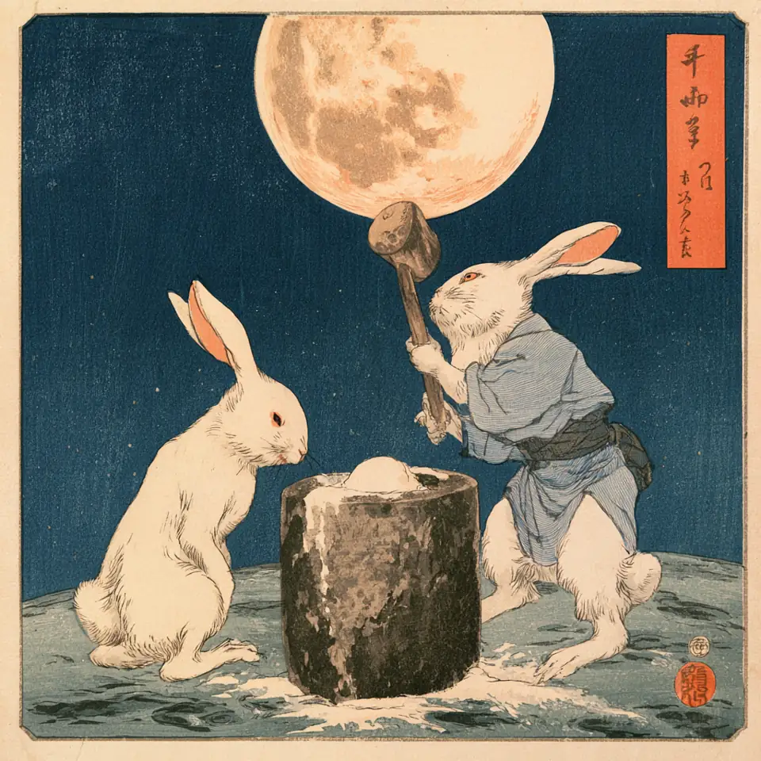

Series — The Moon · vol.1
月に吠える
〜月を見て歌う人々〜
月の特集 vol.1。
人はなぜ月を見るのか。月に話しかけてきた人たちの歌を7曲、ぜんぶこのページの中で。
IN THIS ISSUE
押すとそこに飛びます
 CHAPTER 01
CHAPTER 01 CHAPTER 02
CHAPTER 02 CHAPTER 03
CHAPTER 03 CHAPTER 04
CHAPTER 04 CHAPTER 05
CHAPTER 05 CHAPTER 06
CHAPTER 06 CHAPTER 07
CHAPTER 07月には、行ったことがある人が、まだ12人しかいない。
1969年から1972年まで、アポロ計画で月面を歩いたのは12人。それきり、誰も行っていない。「本当は行っていない」と言う人も、いまだにいる。それはそれとして。
人はなぜ月を見るのか。行けもしないのに見上げて、祈った。恋しい人を思った。月明かりの下で恋をした。ぼーっと眺めて、お団子を食べて、季節を知った。人は、月に話しかけてきた。
題は、萩原朔太郎が1917年に出した最初の詩集『月に吠える』から借りた。月に話しかけた人たちの歌を7曲。まず、月あかりで踊った男から。
順番は年代順ではありません。まず、ギターを置いて歌った男から。
ギターを置いて、月あかりで踊った
布袋寅泰 - DANCING WITH THE MOONLIGHT
アルバム『GUITARHYTHM』 ／ 1988.10.5
1988年、ソロ1作目のアルバム『GUITARHYTHM』の1曲。BOØWYが終わった年に、布袋寅泰が最初にやったことのひとつが「月あかりと踊る」だった。
録音はロンドンのアビー・ロード・スタジオ、それも第2スタジオ。ビートルズが使った部屋だ。翌年イギリスで12インチを出したが、ほとんど売れずに早々と廃盤になった。
代々木の初披露で、布袋はこの曲だけギターを持たず、歌だけでステージに立った。ギターの神様みたいな人が、月の前では手ぶらになる。
ビートルズの部屋で録った男の、24年前。リバプールの4人は、レコードの裏側で月を拾っていた。
B面で拾った月に、前奏なしで叫ぶ
The Beatles - Mr. Moonlight
アルバム『Beatles for Sale』 ／ 1964.12.4
もとは1962年、アトランタのドクター・フィールグッド＆ジ・インターンズのシングルのB面。ビートルズはその裏面を拾って、ライブでやり始めた。1962年の原曲は、この曲のページで聴ける。
ライブではよく1曲目だった。ジョンが前奏なしで、いきなり「ミスター！」と叫ぶ。何もないところから正しい音を出さなければならなかった、とロードマネージャーのニール・アスピノールが振り返っている。
ところが評論家には、「あのアルバムで、たいていの人がいちばん嫌いな曲」とまで書かれた。月に本気で叫ぶ人は、だいたい笑われる。
叫ぶ月があるなら、吠える月もある。英語で「月」は、昔から「狂う」と隣り合わせだった。
狼男だと思っていたら、猫だった
Michael Jackson - Thriller
ミュージック・ビデオ／監督：ジョン・ランディス ／ 1983.12.2
英語の lunatic（狂人）は、ラテン語の「月に打たれた」から来ている。月が狂気を起こすと、本気で信じられていた。詩集『月に吠える』を「変態心理の代表作」扱いされた朔太郎も、「少しく不愉快です」と書いている。月に吠えると、人は勝手にこちらを病気にする。
狼男の話も古い。紀元60年ごろのローマの小説『サテュリコン』に、もう狼に変わる男が出てくる。満月の夜に変身する姿が定番になったのは、主に今の映画や小説の中だ。
潮の満ち引きは、本当に月のせいだ。でも「満月の夜は事件や出産が増える」は、たくさんの研究で関係が見つかっていない。月の周期と月経の周期が近いのも、偶然らしい。つまり、俗説だ。
マイケル・ジャクソンは映画『狼男アメリカン』を見て、その監督ジョン・ランディスに短編を頼んだ。ところが特殊メイクのリック・ベイカーは「狼男はもう作りたくない」と、彼を猫人間にした。冒頭には「オカルトを信じるものではない」という断り書きまで付いている。2009年、ミュージック・ビデオとして初めてアメリカ国立フィルム登録簿に選ばれた。
同じ年の春、モータウン25周年の特番で、彼は初めて人前でムーンウォークをした。動きそのものは「バックスライド」と呼ばれた古いもので、マイケルがやったのは発明ではなく、命名だった。月を歩いた人は12人。月を歩く真似をした人は、数えきれない。
もう1本 — 1983年3月、初めて人前でムーンウォークした夜
狂った月の話は、ここまで。ムーンウォークの44年前、月明かりの下では、みんなゆっくり踊っていた。
「日の出」の相方として、月明かりになった
Glenn Miller & His Orchestra - Moonlight Serenade
作曲：グレン・ミラー／作詞：ミッチェル・パリッシュ ／ 1939
グレン・ミラー楽団は、この曲に名前が付く前から、テーマ曲として演奏していた。もとは1935年の「Now I Lay Me Down to Weep」で、題名は何度も変わった。
最後の名前を決めたのは出版社だった。ミラーが「Sunrise Serenade（日の出のセレナーデ）」を録音すると知って、日の出の相方なら月明かりだろう、と。1939年4月4日にニューヨークで録音、全米3位。
1944年12月15日、少佐になっていたミラーを乗せた飛行機は、イングランドからフランスへ向かう途中、英仏海峡の上で消えた。原因は、はっきりしていない。テーマ曲だけが残って、いまも月明かりの下で鳴っている。
戦争の前の、ダンスホールの月。戦争が終わって16年後、ニューヨークの非常階段で、月は川と並べられた。
「私の死体を越えてからにして」。重役が切ろうとした歌
Audrey Hepburn - Moon River
映画『ティファニーで朝食を』／作曲：ヘンリー・マンシーニ／作詞：ジョニー・マーサー ／ 1961
1961年の映画『ティファニーで朝食を』。マンシーニとマーサーは、ヘプバーンが歌うためにこの曲を書いた。アカデミー歌曲賞。
マーサーの最初の題は「Blue River」。ジョージア州サバンナで、夏にハックルベリーを摘んだ記憶を重ねて書いた。月をぼーっと眺めながら、ここではないどこかへ行きたくなる歌だ。
試写の反応が鈍く、パラマウントの重役がこの曲を切ろうと言い出した。ヘプバーンの返事は証言によって幅があるが、「私の死体を越えてからにして！」から、もっと激しい言い回しまで伝わっている。
旅立ちの月の次は、置いてきた人を思う月。この特集でいちばん新しい月が、いちばん欠けている。
欠けている月の方を、人は長く見ている
絢香 - 三日月
4枚目のシングル／作詞：絢香／作曲：西尾芳彦・絢香 ／ 2006.9.27
テーマは遠距離恋愛。大阪を離れて上京することが現実になり始めた頃、地元の大切な人たちを思って書いた。
「三日月」は、携帯電話の形の比喩でもある。2006年の携帯は、まだ折りたたみ。閉じると、三日月に似ている。
初のオリコン週間1位。その年、レコード大賞の最優秀新人賞。紅白でもこの曲を歌った。2018年からはマクドナルドの月見バーガーのCMで流れた。会えない人を思う歌が、月見の季節の合図になった。
玉置浩二が歌う「三日月」は、この曲のページで。
遠い人を思う月は、100年前の子どもの歌にもいた。最後は、日本の秋の月へ。
月にあいさつしてから、いない人の話をする
ひばり児童合唱団 - 十五夜お月さん
作詞：野口雨情／作曲：本居長世 ／ 1920（大正9）
1920年、本居長世が発表した童謡。歌ったのは長世の長女・みどりで、この曲で一躍有名になり、童謡歌手の第1号、レコード吹き込みの第1号になった。作詞は「七つの子」の野口雨情。
歌は、月にあいさつするところから始まる。あいさつをしてから、いなくなった人の話をする。月は何も言わない。言わないから、話せる。
十五夜の月見は、中国から平安時代の貴族に伝わった。文献には、859年の宴が記されている。団子が広まったのは江戸時代、すすきが全国に広まったのは明治から。とれたての里芋を供えるので「芋名月」とも呼ぶ。
同じ秋の満月を、西洋では「ハーベスト・ムーン（収穫の月）」と呼ぶ。秋分にいちばん近い満月のことで、この呼び名は18世紀の初めから記録がある。東は団子を供え、西は名前をつけた。どちらも、実りの夜に月を見上げている。

布袋は月あかりで踊った。ジョンは月に叫んだ。マイケルは月を歩いた。グレン・ミラーは月明かりで人を踊らせ、ヘプバーンは月の川を眺め、絢香は欠けた月に遠い人を重ね、子どもたちは十五夜の月にあいさつをした。
人は昔から色んな思いを月に馳せてきた。けれど、誰も月から返事をもらったことはない。
それでも人は、今でも月を眺める。帰りのコンビニの袋を提げたまま、今夜も。次回もお楽しみに。
この特集をシェア
▼この記事を書くきっかけになった動画
「歌を覚える季節は終わらない」
SOURCES
はじめに
- Wikipedia — List of Apollo astronauts（月面を歩いた12人）
- Wikipedia — Moon landing conspiracy theories
- Wikipedia — 月に吠える（萩原朔太郎の詩集）
布袋寅泰 - DANCING WITH THE MOONLIGHT
The Beatles - Mr. Moonlight
Michael Jackson - Thriller
- Wikipedia — Lunatic
- Wikipedia — 萩原朔太郎
- Wikipedia — Werewolf
- Wikipedia — Lunar effect
- Wikipedia — Michael Jackson's Thriller (music video)
- Wikipedia — Motown 25: Yesterday, Today, Forever
- Wikipedia — Moonwalk (dance)
Glenn Miller & His Orchestra - Moonlight Serenade
Audrey Hepburn - Moon River
絢香 - 三日月
ひばり児童合唱団 - 十五夜お月さん
そのほか
OTHER MAGAZINES — ほかの特集